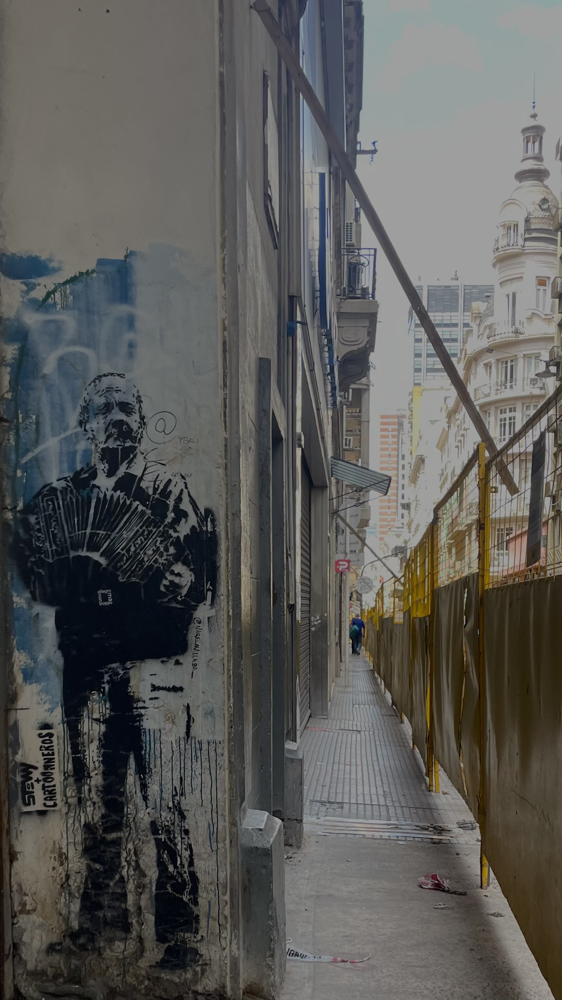

Registro 01 · Lara Alonso
Astor Piazzolla
Microcentro, Buenos Aires
Esta fotografía fue tomada en Microcentro. El mural representa a Astor Piazzolla tocando el bandoneón y está realizado principalmente en blanco y negro. La figura ocupa gran parte de la pared y hace referencia al tango y a uno de sus músicos y compositores más reconocidos.
Ver obra completa